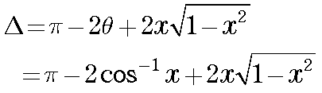
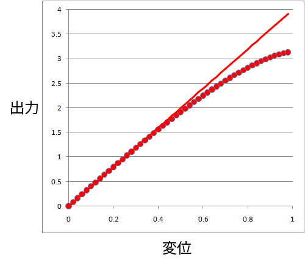
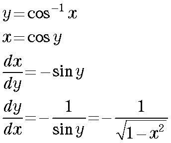
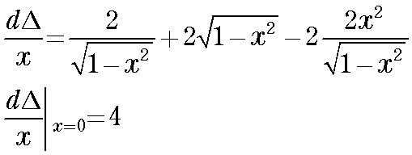

さて，実際のカーブはどうなっているでしょう？

ｘを０から1の間で計算すると，

と言うようになります．
つまり，フォトダイオードに当たった輝点が大体半径の半分ぐらいまでは直線性のよいカーブとなるわけですね．
こういった点をふまえて，実験をしないと，直線性から外れたところで計測した場合，思わぬ結果（まちがった結果）をまねかねないので，注意が必要です．
ところで，この実線，原点での傾きを外挿した直線ですが，どのような式になるでしょう？
これは，上の式を，ｘ，で微分して，ｘ＝０，とすればいいのですが，ややこしいのが，cos-1x．
でも，そんなにややこしくないのです，つまり，

従って，

となり，傾きは４となります．